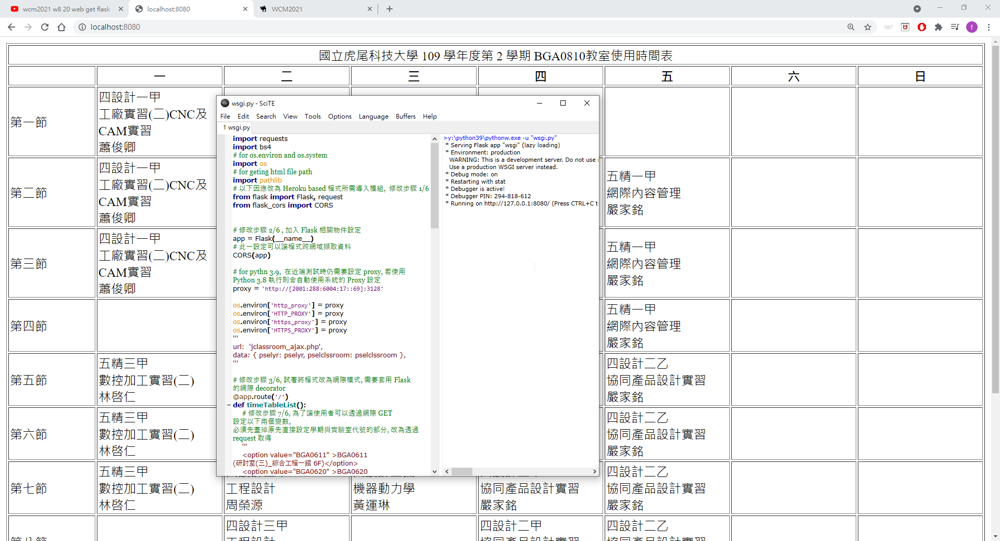
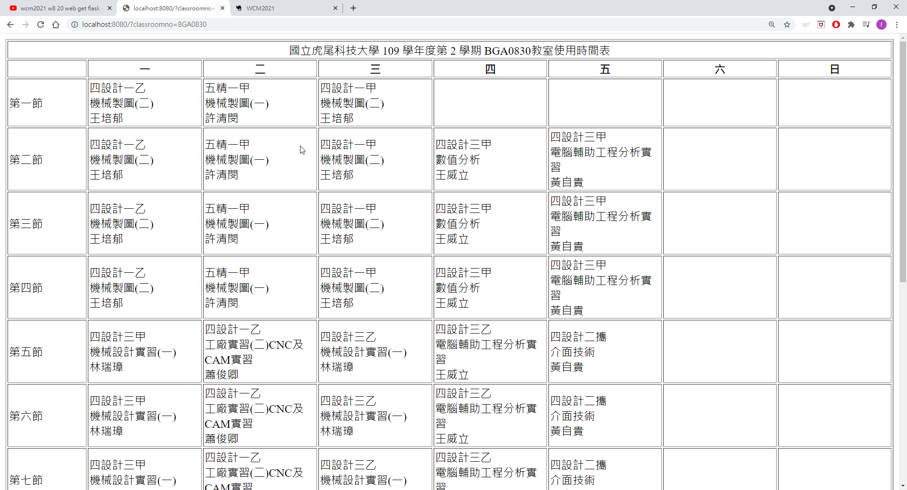
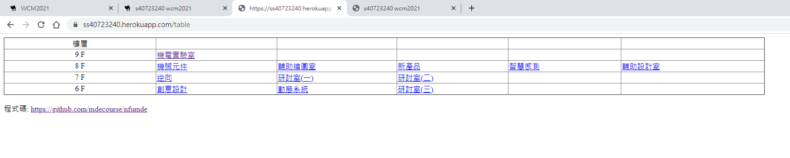
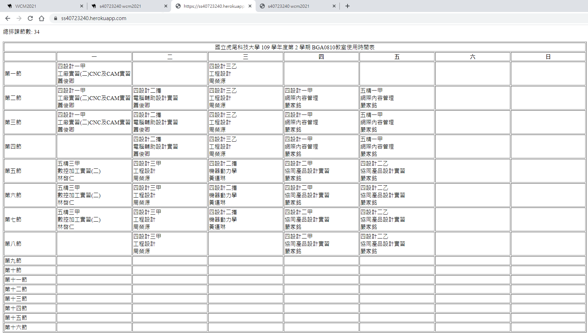

Note <<
Previous Next >> 期末報告
期中報告
W9 週各組將要利用 ShareX 上台使用 Reveal 網際簡報錄製分組專題報告, 相關分組報告影片可參考協同產品設計實習 Stage1 簡報影片.
推送程式到heroku:https://ss40723240.herokuapp.com/
執行步驟:
1. 充分了解 https://github.com/mdecourse/nfulist 中的 https://github.com/mdecourse/nfulist/blob/master/wsgi.py 網際程式架構.
2. 知道將一個網際 Python 程式部署到 Heroku, 需要同時設定 Procfile, requirements.txt 與 runtime.txt, 其中 Process file (Procfile) 中的 web gunicorn wsgi:app, 是指定採用 gunicorn 作為網際 WSGI Http 伺服器, 且從 wsgi.py 中的 app 物件啟動執行. 而 requirements.txt 中則宣告必須執行的 Python 模組, 而 runtime.txt 則指定要使用的 Python 版次.
3. 從 Topic0 可以取得透過教務主機查詢電腦輔助設計室排課時間表資料:
import requests
import bs4
# for os.environ and os.system
import os
# for geting html file path
import pathlib
# for pythn 3.9
proxy = 'http://[2001:288:6004:17::69]:3128'
os.environ['http_proxy'] = proxy
os.environ['HTTP_PROXY'] = proxy
os.environ['https_proxy'] = proxy
os.environ['HTTPS_PROXY'] = proxy
'''
url: 'jclassroom_ajax.php',
data: { pselyr: pselyr, pselclssroom: pselclssroom },
'''
semester = '1092'
classroomno = 'BGA0810'
column = True
if semester == None:
semester = '1092'
if classroomno == None:
# BGA0810 電腦輔助設計室
classroomno = 'BGA0810'
headers = {'X-Requested-With': 'XMLHttpRequest'}
url = 'https://qry.nfu.edu.tw/jclassroom_ajax.php'
post_var = {'pselyr': semester, 'pselclssroom': classroomno}
result = requests.post(url, data = post_var, headers = headers)
soup = bs4.BeautifulSoup(result.content, 'lxml')
# 先除掉所有 anchor
for a in soup.findAll('a'):
# bs3 語法
#a.replaceWithChildren()
# bs4 語法, 將標註與內容拆開
a.unwrap()
# 根據輸出設定, 取出 class='tbcls' 的 table 資料
table = soup.find('table', {'class': 'tbcls'})
# 重建 table, 設定邊線為 1 pixel
output = "<table border='1'>"
for i in table.contents:
# 利用 replace 復原
output += str(i).replace(" ", " ")
output += "</table>"
#print(output)
# 將 output 寫入 w1_classroom.html
fileName = "w1_classroom.html"
with open(fileName, "w", encoding="utf-8") as file:
file.write(output)
# 利用 os.system() 以 default browser 開啟 w1_class_local.html
filePath = pathlib.Path(__file__).parent.absolute()
#print(filePath)
# set firefox as default browser and start url to open html file
os.system("start file:///" + str(filePath) + "\\" + fileName)
只需要針對上列程式納入"學期代號"與"實驗室編號"等兩個 GET 網際 URL 變數後, 即可將此網際程式部署至 Heroku
semester = request.args.get('semester')
classroomno = request.args.get('classroomno')
import requests
import bs4
# for os.environ and os.system
import os
# for geting html file path
import pathlib
# 以下因應改為 Heroku based 程式所需導入模組, 修改步驟 1/6
from flask import Flask, request
from flask_cors import CORS
# 修改步驟 2/6 , 加入 Flask 相關物件設定
app = Flask(__name__)
# 此一設定可以讓程式跨網域擷取資料
CORS(app)
# for pythn 3.9, 在近端測試時仍需要設定 proxy, 若使用 Python 3.8 執行則會自動使用系統的 Proxy 設定
proxy = 'http://[2001:288:6004:17::69]:3128'
os.environ['http_proxy'] = proxy
os.environ['HTTP_PROXY'] = proxy
os.environ['https_proxy'] = proxy
os.environ['HTTPS_PROXY'] = proxy
'''
url: 'jclassroom_ajax.php',
data: { pselyr: pselyr, pselclssroom: pselclssroom },
'''
# 修改步驟 3/6, 試著將程式改為網際模式, 需要套用 Flask 的網際 decorator
@app.route('/')
def timeTableList():
# 修改步驟 7/6, 為了讓使用者可以透過網際 GET 設定以下兩個變數, 必須先蓋掉原先直接設定學期與實驗室代號的部分, 改為透過 request 取得
'''
<option value="BGA0611" >BGA0611 (研討室(三)_綜合工程一館 6F)</option>
<option value="BGA0620" >BGA0620 (動態系統實驗室_綜合工程一館 6F)</option>
<option value="BGA0640" >BGA0640 (創意設計室_綜合工程一館 6F)</option>
<option value="BGA0710" >BGA0710 (研討室(二)_綜合工程一館 7F)</option>
<option value="BGA0730" >BGA0730 (研討室(一)_綜合工程一館 7F)</option>
<option value="BGA0760" >BGA0760 (逆向快速成型實驗室_綜合工程一館 7F)</option>
<option value="BGA0810" >BGA0810 (電腦輔助設計室_綜合工程一館 8F)</option>
<option value="BGA0820" >BGA0820 (智慧感測與致動實驗室_綜合工程一館 8F)</option>
<option value="BGA0823" >BGA0823 (新產品創意設計中心_綜合工程一館 8F)</option>
<option value="BGA0830" >BGA0830 (電腦輔助繪圖室_綜合工程一館 8F)</option>
<option value="BGA0842" >BGA0842 (機械元件設計實驗室_綜合工程一館 8F)</option>
<option value="BGA0901" >BGA0901 (國際會議廳_綜合工程一館 9F)</option>
<option value="BGA0911" >BGA0911 (機電實驗室_綜合工程一館 9F)</option>
'''
'''
semester = '1092'
classroomno = 'BGA0810'
column = True
'''
semester = request.args.get('semester')
classroomno = request.args.get('classroomno')
if semester == None:
semester = '1092'
if classroomno == None:
# BGA0810 電腦輔助設計室
classroomno = 'BGA0810'
#print(semester, classroomno)
headers = {'X-Requested-With': 'XMLHttpRequest'}
url = 'https://qry.nfu.edu.tw/jclassroom_ajax.php'
post_var = {'pselyr': semester, 'pselclssroom': classroomno}
result = requests.post(url, data = post_var, headers = headers)
soup = bs4.BeautifulSoup(result.content, 'lxml')
# 先除掉所有 anchor
for a in soup.findAll('a'):
# bs3 語法
#a.replaceWithChildren()
# bs4 語法, 將標註與內容拆開
a.unwrap()
# 根據輸出設定, 取出 class='tbcls' 的 table 資料
table = soup.find('table', {'class': 'tbcls'})
# ########## 以下程式碼用來計算排課節數 ##########
# 以下取出 td 標註資料
table_data = [i.text for i in table.find_all('td')]
#print(table_data)
timeTable = []
# 去除非排課欄位資料內容
for i in table_data:
if not "虎尾科技" in i and not "節" in i and not "\xa0" in i:
timeTable.append(i)
#print(len(timeTable))
totalNum = len(timeTable)
# ########## 以上程式碼用來計算排課節數 ##########
# 重建 table, 設定邊線為 1 pixel
output = "總排課節數: " + str(totalNum) + "<br /><br /><table border='1'>"
for i in table.contents:
# 利用 replace 復原
output += str(i).replace(" ", " ")
output += "</table>"
#print(output)
# 修改步驟 5/6 , 因為已經將原先可列印出程式的步驟改為 function, 因此必須以 return 將擷取到的網頁資料傳回
return output
@app.route('/table')
def timeTable():
return "<a href='http://www.google.com'>google</a>"
# 修改步驟 4/6 , 因為改寫為網際程式後, 下列將內容存檔並自動呼叫 Firefox 的程式碼不再適用, 必須蓋掉
'''
# 將 output 寫入 w1_classroom.html
fileName = "w1_classroom.html"
with open(fileName, "w", encoding="utf-8") as file:
file.write(output)
# 利用 os.system() 以 default browser 開啟 w1_class_local.html
filePath = pathlib.Path(__file__).parent.absolute()
#print(filePath)
# set firefox as default browser and start url to open html file
os.system("start file:///" + str(filePath) + "\\" + fileName)
'''
# 修改步驟 6/6, 配合網際程式啟動, 以及 Python 程式執行與納入其他程式執行的特定進行配置
if __name__ == '__main__':
app.run(host='127.0.0.1', port=8080, debug=True)
根據上面去做修改
測試localhost:8080


創建herokuapp
試著將分組程式的資料夾推上heroku


Note <<
Previous Next >> 期末報告